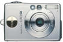

Hilfe zum Fotorenamer Hinweise zur Programmbenutzung:
Was tut das Programm ? Die Bilder auf den IXUS-Digitalkameras sind nach folgendem Schema benannt: IMG_Nummer.jpg Dadurch gibt es keine Information im Dateinamen, wann das Bild erstellt wurde. Lädt man jedoch die Bilder von der Kamera auf den PC, so entspricht das Zuletzt-Geändert-Datum der Bilddatei dem Aufnahmedatum des Bildes.Dies nutzt das Programm aus und verändert den Dateinamen nach folgendem Schema: JJJJMMTT_HHMM_IMG_Nummer.jpg Durch die Verwendung des ISO-Datumsformats lassen sich die Bilder alphabetisch sortieren, so dass eine Diashow einfacher möglich wird.Beispiel Aus der Datei IMG_1865.jpg wird die Datei20031020_1417_IMG_1865.jpg Das bedeutet, dass das Bild am 2003-10-20 um 14:17 Uhr aufgenommen wurde.© Idee und Umsetzung, 1996-2011 Aiki IT, Berlin Last Update: 2011-03-03 |